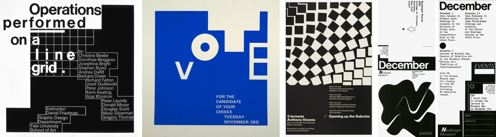

Design Overview
Ventura Future is an exhibition and platform created to promote and create equal opportunities for emerging, independent, and established designers alike. As part of the cultural organization Ventura Projects based in Milan, Italy Ventura Future partakes annually during the Milan Design Week to showcase the latest developments and forefront of contemporary design.
Our team was projected to uncover points of Intervention for Ventura Future and address these touchpoints through creating appropriate Graphic and Digital Assets for the exhibition.
Dan Friedman
Prior to beginning the project, our team took the time to study the radical modernist, Dan Friedman to motivate our Visual Design. This foundation gave our approach the fundamental principles and influence in creating timeless work.
The key principles from Dan Friedman that influenced our project include:
- Use of Combination Grids
- Energy Created Through Scale and Orientation
- Reversible Figure Ground Motifs
- Varying Use of Typographic Alignment

Graphic Experimentation
Taking the context of Dan Friedman's design principles and the Ventura Future exhibition, our team experimented graphically to create a Design System and art direction in the form of sketchbooks, totebags, and posters.

Graphic Assets
Following the critique session of the graphic investigation, our team iterated one final time to land on a direction that combined the principles that were working out while dropping the ones that weren't to create an appropriate system for the exhibition.
-
The 4 colours were used to represent the 4 themes of exhibitors that existed at
Ventura
Future 2019:
- Craft - Violet
- Tech - Blue
- Food - Yellow
- Academy - Green
- Type was scaled and oriented to create energetic and dynamic figure ground layouts.
- The negative spaces created from the figure-ground was used to hold content or the thematical colours.
Additionally, the graphic asset items were swapped from the sketchbook to the lanyard because of the lanyards' bigger touchpoint with the visitors – creating more impact and value for the organization.
Intervention
There were many points of intervention that could be made for the microsite, but our team decided to intervene at the pre-purchase point and encourage applications rom designers for the upcoming Ventura Future. This decision was made to align with the organization's main goal of supporting and creating opportunities for emerging talent as the future of design culture.
With this goal in mind, our intervention proposed to project the the benefits of participating in Ventura Future with the microsite to promote applications and increase engagement for the prospective exhibiting designers of the 2020 Ventura Future event.
Microsite
Prior to designing the microsite, our team decided to narrow down on the Dan Friedman principles for the direction of the digital asset.
We decided to focus on second and third principle as the key driving factors of the microsite's Visual Design to adapt to the new digital medium as a website.
- Use of Combination Grids
- Energy Created Through Scale and Orientation
- Reversible Figure Ground Motifs
- Varying Use of Typographic Alignment
The microsite uses past data from the 2019 exhibition to give prospective designers a sense of the opportunity and benefits they open themselves up to by participating at the exhibition. A shade of black and tint of white was used for the entire microsite to keep the prestigious and elegant character of Ventura Future.
Interaction
An infinite scroll acts as the microsite's main interaction for users to navigate through the page's content.
The microsite loads into decoding numbers that are significant to the previous year's Ventura Future exhibition. Once the numbers are loaded, visitors are prompted to scroll down through the scroll indicator.
As the page scrolls, the progress bar highlights the significant numbers from the previous year's exhibition as the numbers are explained by the content on the right.

At the end of the scroll is a call to action which gives the visitors access to the application page on the main Ventura Projects site.
Click here to view the full demo.Retrospective
Through this project, I was able to learn 3 important lessons.
The first was the importance of semantics and context in the work we create. Having content strategy was crucial for driving the process to strive in creating meaningful works.
The second reflection is the difference and relationship between graphic design and interaction design. Although having our foundation in graphic design immensely helped us get going, when in the process of transferring the graphic asset qualities to the digital asset, we realized that the principles we practiced didn't fully translate over to the visual design of the interactions as simply as we implicitly thought it would be.
And finally, the third lesson I learned was the importance of design history and fundamental principles in design. Through studying our precedent designer, Dan Friedman, I was able to grasp the freedom that comes from having solid principles. Previously, I had the misconception that having regulations would be restricting, but now I embrace having systems for working.